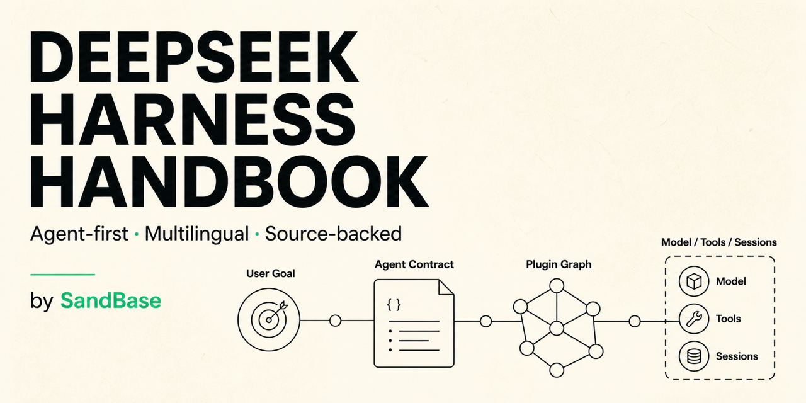

Independent, source-backed, agent-first
Operate the harness, not just the model.
Understand DeepSeek Harness from first run to production boundaries.

Five-minute first run
Start with evidence.
Launch the official Web profile from a disposable workspace, choose a model, and begin with a bounded read-only task.
npx @deepseek-ai/dsh web
- Choose the workspace.Select the exact disposable repository the agent may inspect.
- Configure the model.Use a limited credential with an environment spending cap.
- Ask for evidence.Require real file paths and stop before writes or external effects.
- Inspect the graph.Run
dsh --profile web --dump-configbefore changing policy.
A runtime is a composition.
A profile resolves bundles and patches into one Cordis graph. The model is one adapter inside that graph, not the product boundary.
- Model
- Provider, endpoint, credential reference, and reasoning route.
- Effects
- Tools, approval policy, sandbox, and independent verification.
- Session
- Durable events that reconstruct model-visible history.
- Surface
- Web, headless, SDK, or a custom client over the same runtime.
Pick the path that matches the job.
Each guide states the expected evidence, failure branch, and safety boundary.
49 indexed paths
Open the complete canonical indexA prompt is an instruction. The boundary lives in policy, isolation, and evidence.
Pin the runtime. Review the resolved graph. Separate credentials by environment. Test denial, timeout, partial completion, and cleanup.
Open the operator cheat sheetBuild on facts that can be replayed.
The handbook is independent, open source, and verified against primary DeepSeek Harness sources.
Read and star on GitHub